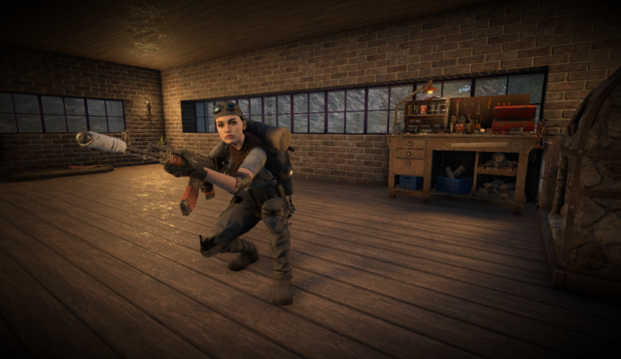

Detalhes do Serviço
Transformando ideias em realidade
Com foco em qualidade e inovação, ofereço serviços personalizados para atender às suas necessidades. Seja para criar um site, um jogo ou projetos diversos como freelancer, trabalho com dedicação e profissionalismo.
Desenvolvimento de Sites Profissionais
Crio sites personalizados e funcionais, com foco na experiência do usuário e na manutenção fácil. Cada site é desenvolvido para atender às suas necessidades específicas, oferecendo soluções modernas e responsivas, adaptadas a qualquer tipo de dispositivo.

Desenvolvimento de Sites Personalizados
Crio sites personalizados e profissionais, focados em design responsivo e uma navegação intuitiva. Combinando estética e funcionalidade, meu objetivo é entregar uma presença online que reflita a identidade do seu negócio e proporcione uma excelente experiência ao usuário. Desde sites institucionais até soluções completas para e-commerce, cada projeto é feito sob medida para atender às suas necessidades e alcançar seus objetivos digitais.
- Desenvolvimento em HTML5
- Estilos personalizados com CSS3
- Interatividade com JavaScript
- Design responsivo com Bootstrap
Crio sites com código limpo, organizado e fácil de manter. Cada projeto é desenvolvido com boas práticas de programação, garantindo que outros desenvolvedores possam facilmente entender, modificar e expandir o código quando necessário. A estrutura do site é pensada para ser escalável, eficiente e otimizada, proporcionando uma experiência de navegação fluida e sem problemas de manutenção a longo prazo.
Desenvolvimento de Jogos
Especialista na criação de jogos survival horror, oferecendo experiências imersivas e desafiadoras. Meus projetos combinam atmosfera intensa, design detalhado e mecânicas envolventes que mantêm os jogadores na ponta da cadeira.
Jogos Survival Horror Personalizados
Crio jogos focados em elementos de horror psicológico, ambientação sombria e mecânicas que desafiam o jogador a sobreviver em situações extremas. Cada projeto é desenvolvido com atenção ao enredo, à imersão e à jogabilidade fluida, garantindo uma experiência única e marcante.
- Desenvolvimento com Unity e C#
- Criação de ambientes sombrios e atmosféricos
- Mecânicas de sobrevivência e interação
- Design de níveis desafiadores e narrativas imersivas
Meus jogos são desenvolvidos com foco em performance, expansibilidade e código limpo. Utilizo boas práticas para garantir que o projeto seja fácil de manter e evoluir, além de proporcionar uma experiência de jogo fluida e impactante. Cada detalhe é planejado para criar uma obra única no gênero de survival horror.
Serviços Freelancer
Ofereço serviços como freelancer, combinando criatividade e habilidades técnicas para entregar soluções sob medida. Meu foco está em atender às necessidades específicas de cada cliente, sempre com qualidade e eficiência.
Trabalhos Personalizados com Qualidade
Meu objetivo como freelancer é trazer ideias à vida, seja desenvolvendo sites personalizados, criando conteúdos gráficos ou até mesmo contribuindo para projetos de jogos. Cada trabalho é tratado com atenção aos detalhes, buscando sempre superar expectativas.
- Desenvolvimento de sites responsivos
- Criação de designs gráficos criativos e impactantes
- Colaboração em projetos de jogos
- Trabalhos pontuais e entregas rápidas
Com experiência em design gráfico, desenvolvimento web e uma paixão por explorar novos projetos, trago flexibilidade e dedicação para cada trabalho freelancer. Seja para negócios locais ou projetos pessoais, estou aqui para ajudar a transformar suas ideias em realidade.